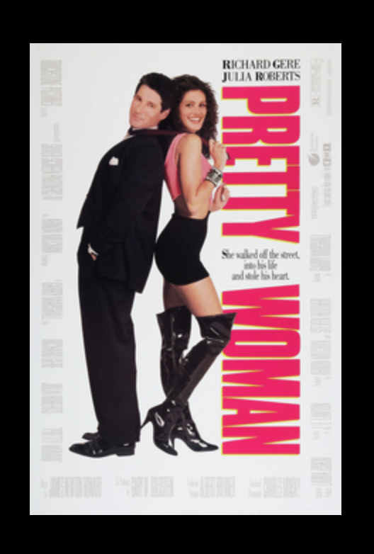
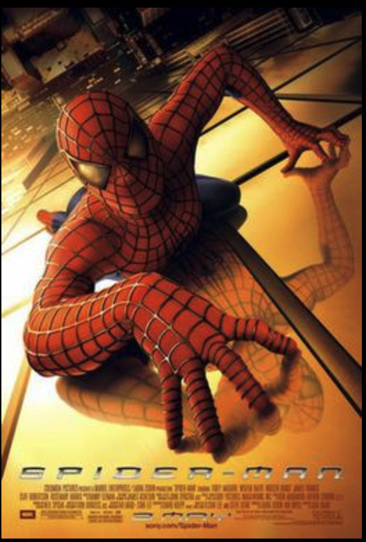
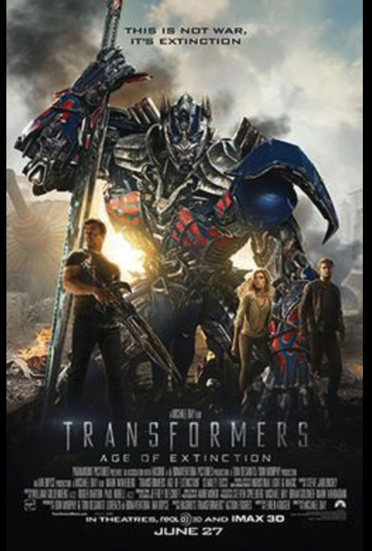

"Pretty Woman" is a romantic comedy film that was released on March 23, 1990. Directed by Garry Marshall, it stars Richard Gere as Edward Lewis, a wealthy businessman, and Julia Roberts as Vivian Ward, a down-on-her-luck prostitute he hires to accompany him to several social events.
The film is well-known for its Cinderella-esque storyline, where the relationship between Edward and Vivian transforms from a business arrangement into a genuine romance.
The film was a significant success, becoming one of the highest-grossing films of 1990. Julia Roberts received a Golden Globe Award for her performance and was also nominated for an Academy Award for Best Actress. "Pretty Woman" is often credited with catapulting Roberts into stardom and is widely recognized as a classic in the romantic comedy genre.
Its success led to the creation of a musical adaptation, which premiered on Broadway in 2018. The film's iconic scenes, like the shopping spree on Rodeo Drive and the opera visit, along with its memorable soundtrack featuring Roy Orbison's song "Oh, Pretty Woman," have cemented its place in popular culture.
"Spider-Man" is a superhero film directed by Sam Raimi, which was released on May 3, 2002. The film is based on the Marvel Comics character of the same name and is the first installment in the Spider-Man trilogy. It stars Tobey Maguire as the title character, Peter Parker, a high school student who gains spider-like abilities after being bitten by a genetically-modified spider.
The film also stars Kirsten Dunst as Mary Jane Watson, Peter's love interest, Willem Dafoe as the villain Norman Osborn/Green Goblin, and James Franco as Harry Osborn, Peter's best friend and Norman's son. The plot focuses on Peter Parker's struggle to balance his personal life with his responsibilities as Spider-Man, while facing the threat posed by the Green Goblin.
"Spider-Man" was a major commercial success, becoming one of the highest-grossing films of 2002. It received positive reviews from critics, who praised its action sequences, visual effects, and Maguire's performance. The film's success helped to establish the superhero genre as a staple of 21st-century cinema and led to two sequels, "Spider-Man 2" (2004) and "Spider-Man 3" (2007), both directed by Sam Raimi and starring Maguire.
The film is noted for its impact on the superhero film genre, setting the standard for many subsequent movies. Its blend of action, romance, and humor, along with its faithful adaptation of the comic book character, have made it a beloved film among both comic book fans and general audiences.
"Transformers" is a science fiction action film directed by Michael Bay, released on July 3, 2007. The film is based on the Transformers toy line and animated television series and is the first installment in the Transformers film series. It was produced by Steven Spielberg and Michael Bay.
The movie stars Shia LaBeouf as Sam Witwicky, a teenager who gets caught in the war between two factions of alien robots, the Autobots and the Decepticons. The Autobots, led by Optimus Prime, seek to protect Earth and the mysterious AllSpark, a powerful artifact that gives life to their race, while the Decepticons, led by Megatron, aim to use it for conquest. The film also stars Megan Fox as Mikaela Banes, Sam's love interest, along with Josh Duhamel, Tyrese Gibson, and Jon Voight in supporting roles.
"Transformers" was a massive box office success, earning acclaim for its special effects, action sequences, and design of the robots. It appealed not only to fans of the original Transformers series but also attracted a new audience, leading to a significant revival of the franchise. The film's success spawned several sequels, including "Transformers: Revenge of the Fallen" (2009), "Transformers: Dark of the Moon" (2011), "Transformers: Age of Extinction" (2014), and "Transformers: The Last Knight" (2017), among others.
The film's blend of high-octane action, stunning visual effects, and a mix of humor and drama helped redefine the modern summer blockbuster. Its portrayal of the epic battles between Autobots and Decepticons, along with the integration of human characters into the narrative, made it a standout film in the genre.
 Contact Me About Me
Contact Me About Me